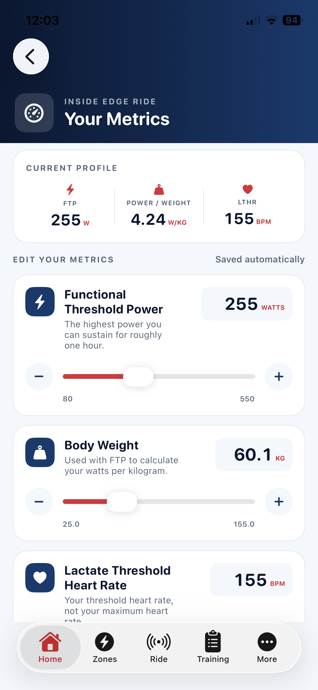
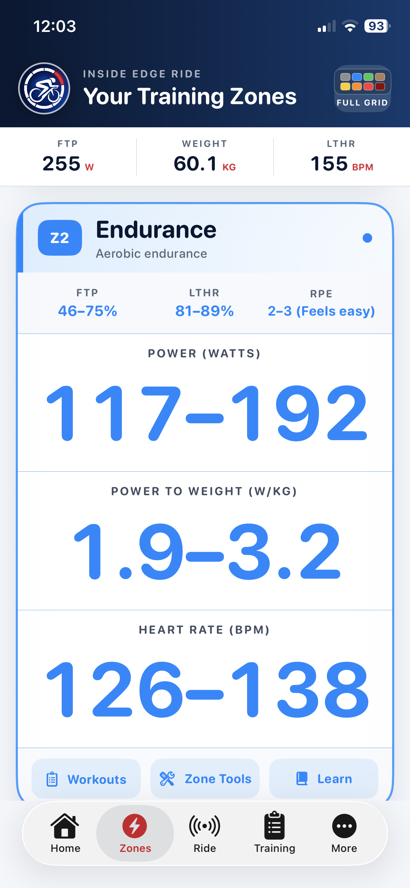
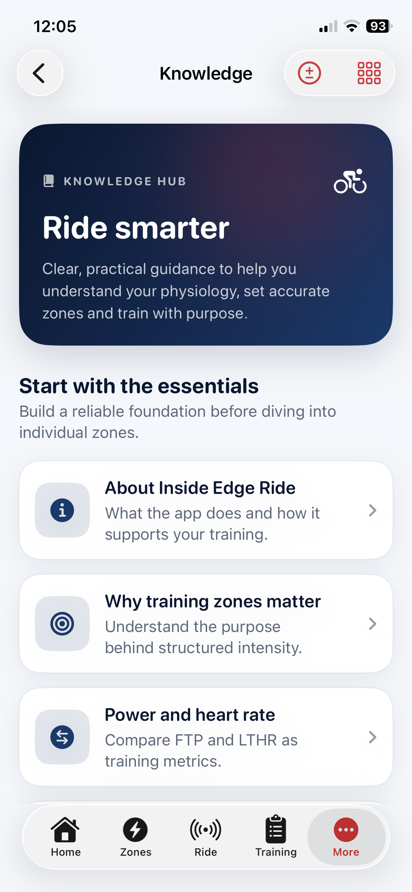
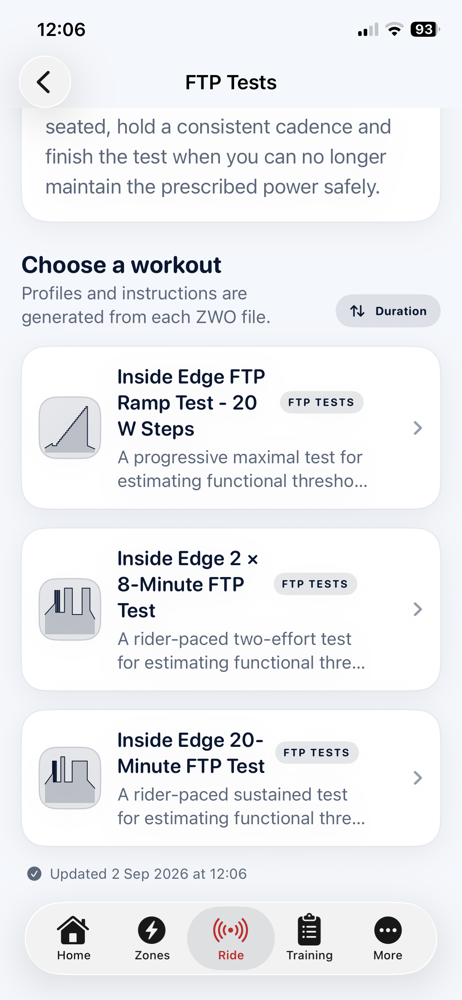

01
Understand your training
Make sense of the numbers before chasing them.
Inside Edge Ride began with one purpose: to make cycling metrics and training zones easier to understand. Your FTP, body weight and lactate-threshold heart rate become personal guidance that follows you from learning into structured training.

Start with the rider
Three inputs unlock a more personal app.
Set your current values once and Inside Edge Ride uses them throughout its zones, calculators, workout previews and live riding screens.
Personalised zones
Know what the effort is for—not just how hard it feels.
Each zone brings together FTP percentage, watts, W/kg, LTHR percentage, heart rate and perceived effort. The app explains the adaptation being targeted and links directly to appropriate tools and workouts.
- Recovery and aerobic endurance
- Tempo and Sweet Spot
- Lactate Threshold and VO2 Max
- Anaerobic Capacity and Neuromuscular Power


Ride smarter
The knowledge sits beside the tools.
Clear, practical guidance explains the physiology behind the screens. Riders can understand why zones matter, compare power with heart rate and learn how testing supports better targets.
Why training zones matterPower and heart rateFTP and LTHR testingAerobic and anaerobic systemsTraining purpose by zoneUsing workout intensity well
Understand FTP
Estimate it, test it and see exactly how it shapes your training.
Functional Threshold Power is the benchmark behind your personalised power zones and percentage-based workout targets. Inside Edge Ride explains the number, provides practical estimation tools and includes three structured ways to test it.


Test in the app
Three protocols. Clear calculations. One useful result.
Choose the approach that suits the rider: a progressive ramp, one sustained 20-minute effort, or two 8-minute efforts. Each protocol includes pacing guidance, worked examples and an explanation of how the final estimate is calculated.
- Structured FTP workouts ready to ride
- Ramp and sustained-test calculations explained
- Results shown in watts and W/kg
- Update FTP to refresh zones and workout targets
From knowledge to action
Once the numbers make sense, use them to train.
Explore practical calculators, select workouts by training purpose and apply personalised targets through a compatible smart trainer.